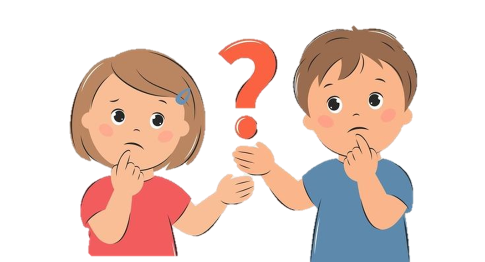
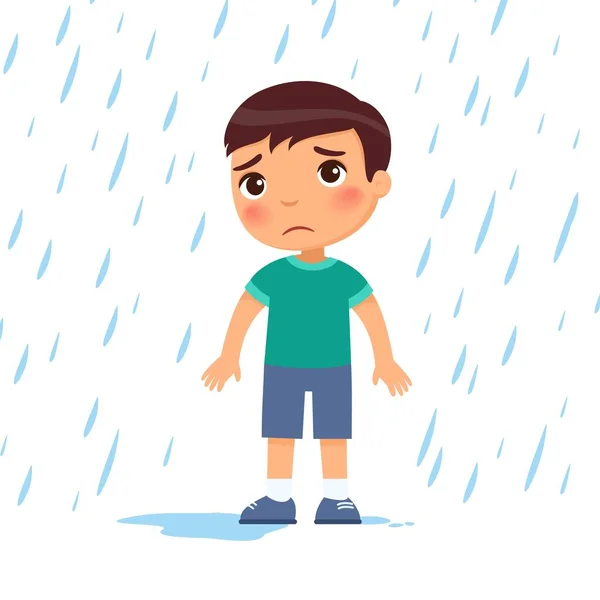
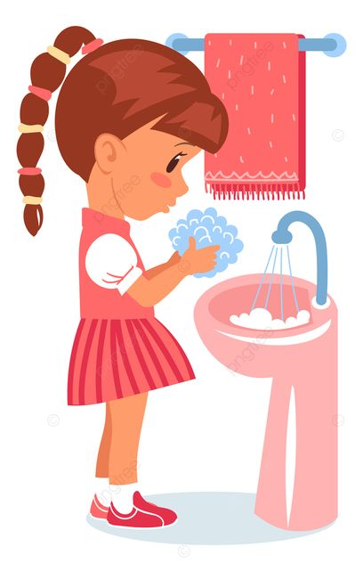
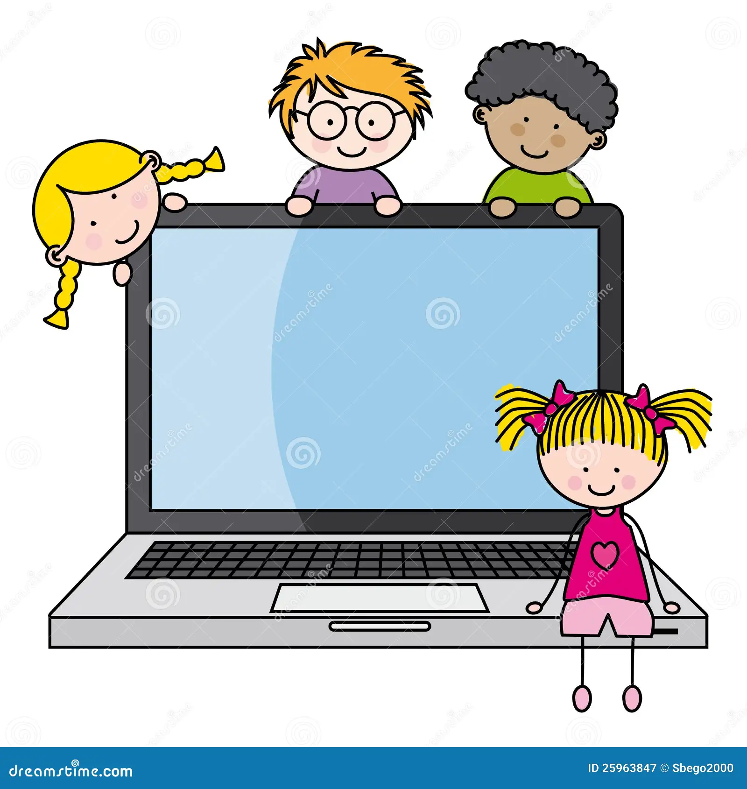

¿Qué son las habilidades lógico-matemáticas?
Las habilidades lógico-matemáticas, es pensar de forma ordenada para resolver problemas, encontrar lo que se repite y tomar buenas decisiones.
Utilizamos las Habilidades Lógico-matemáticas cuando:
- Cuando descubres el patrón: ¿1,2,3,1,2,3,1, qué sigue?
- Cuando ordenas: primero zapatos, luego medias
- Cuando comparas: ¿ cuál vaso tiene más agua?
- Cuando decides: juego o hago la tarea primero

"Las habilidades lógico-matemáticas son las capacidades que ayudan a todas las personas a pensar, razonar y resolver problemas usando números, relaciones y lógica. No solo sirven para Matemática, sino también para la vida diaria".
¿Por qué son importantes?
Porque fortalecen el pensamiento crítico, mejoran la toma de decisiones, ayudan al aprendizaje escolar y preparan al niño para enfrentar situaciones reales de forma lógica y organizada.

AHORA, ¿QUÉ SON LA LÓGICA Y ALGORITMOS?
¿Qué es la lógica?
La lógica es la capacidad de pensar correctamente, analizar situaciones y tomar decisiones usando la razón.
Nos ayuda a entender por qué algo es verdadero o falso y a encontrar soluciones coherentes.
Ejemplo:
Si llueve, uso paraguas.
Está lloviendo → entonces uso paraguas

¿Qué son los algoritmos?
Un algoritmo es un conjunto de pasos ordenados que se siguen para resolver un problema o realizar una tarea.
Ejemplo:
Algoritmo para lavarse las manos:
Abrir la llave
Mojar las manos
Usar jabón
Frotar
Enjuagar
Secar

FUNDAMENTOS DE PROGRAMACIÓN
Los fundamentos de programación son los conceptos básicos que permiten aprender a crear programas, resolver problemas y dar instrucciones a una computadora de forma ordenada y lógica. Son como las reglas iniciales para aprender a programar.
Los fundamentos de programación enseñan a:
- Pensar ordenadamente
- Resolver problemas
- Dar instrucciones claras a la computadora